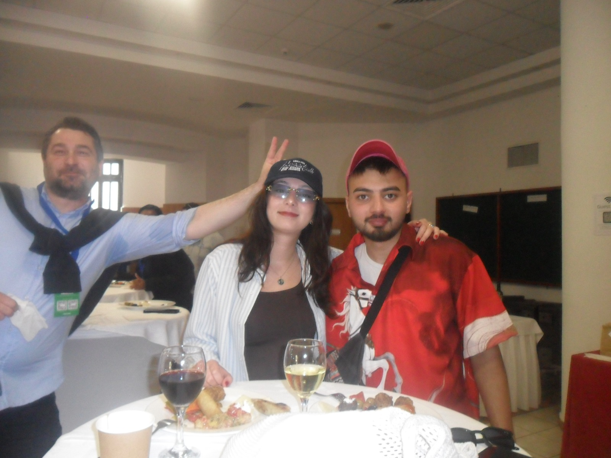
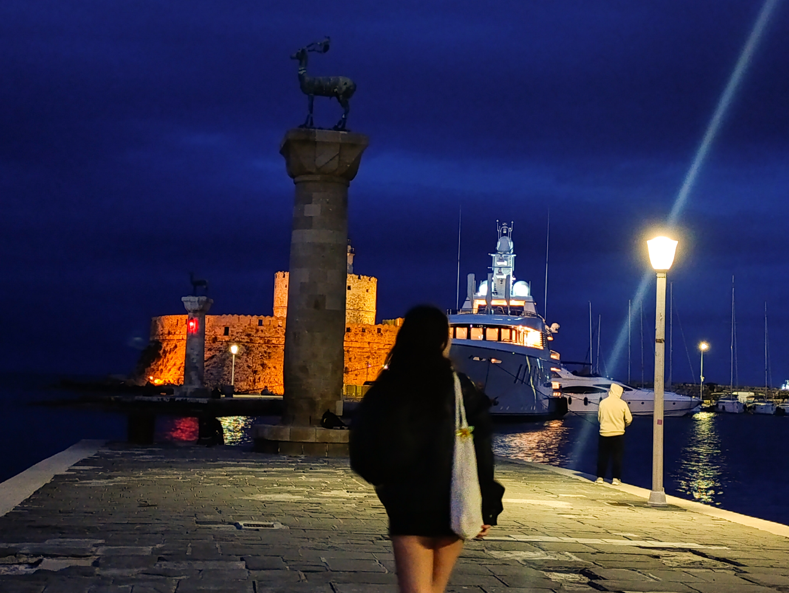

Discovering Rhodes
While exploring Rhodes with my brother, we noticed an interesting building and decided to step inside. To our surprise, it was a university, and there was a lively gathering that felt like a small fair. We met some of the professors, and one of them spoke Turkish! She was so happy to meet us and have a chance to practise. They welcomed us warmly and offered us some of their traditional food. What began as a curious little detour became my favourite memory of the whole trip.
The other photo captures another special moment: visiting the harbour in Rhodes, a place I had always wanted to see because of its connection to the Colossus of Rhodes, one of the Seven Wonders of the Ancient World. Although the ancient statue no longer stands, being there made something I had imagined for so long feel real.
The best memories often begin with curiosity.